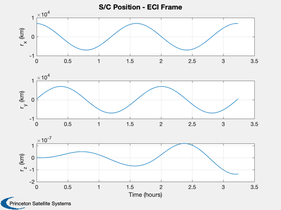
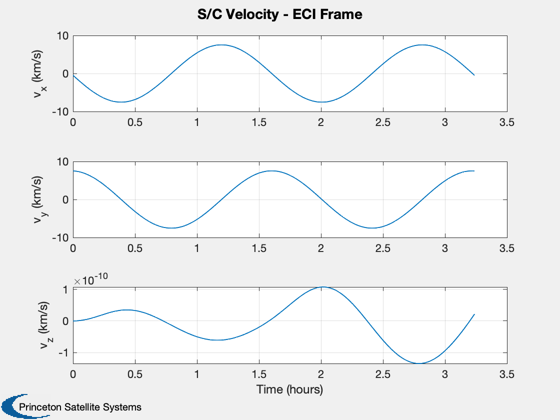
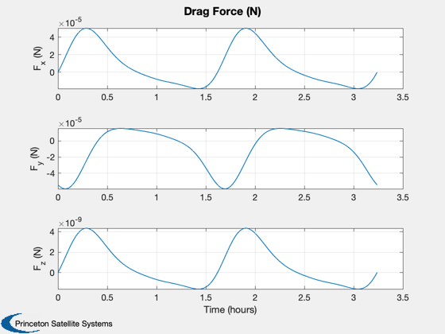

Simple demo to compute drag over one orbit
Assumes point mass s/c, two body propagation. The only perturbing acceleration considered is due to drag. Mass is assumed to be constant, fixed cross-sectional area and drag coefficient. Demo produces plots of spacecraft position and velocity (in ECI frame) and drag force (N) (in ECI frame). DV due to drag perturbation is displayed.
Since version 11 ------------------------------------------------------------------------- See also: Constant, Date2JD, Period, RVFromKepler, SolarFluxPrediction, AtmJ70, EarthRte, Skew, ECIToEF, FOrbCart, Mag, TimeLabl,Plot2D, -------------------------------------------------------------------------
Contents
------------------------------------------------------------------------- Copyright (c) 2013 Princeton Satellite Systems, Inc. All rights reserved. -------------------------------------------------------------------------
System Constants
%------------------ mu = Constant('mu'); % Earth gravitational constant
Time Constants
Enter the number of orbits to propagate for and the number of time steps per orbit
%-------------------------------------------- nStep = 100; % number of time steps over one orbit nOrb = 2; % number of orbit revs
Vehicle parameters
Change the vehicle parameters to meet your s/c requirements
%------------------------------------------------------------- area = 2; % vehicle area (for use in drag computation) [m^2] mass = 100; % vehicle mass [kg] cD = 2.7; % drag coefficient
Select start date
%------------------- jD0 = Date2JD([2012 3 22 0 0 0]); % select simulation start date
Define orbital elements
[semi-major axis, inclination, argument of perigee, ascending node, eccentricity, mean anomaly]
%--------------------------------------------------------------------- el = [7000 0 0 0 0 0]; % units - [km, rad, rad, rad, - , rad]
Assign time vector
%-------------------- nSim = nStep*nOrb; % total simulation steps t = linspace(0,nOrb*Period(el(1)),nSim); % time vector dTSim = t(2)-t(1); % integration time [s]
Define Initial State
%---------------------- [r0, v0] = RVFromKepler( el, 0, mu); % initial position, velocity x = [r0; v0]; % state vector
Solar flux
Get the solar flux predictions for the atmospheric density model. The atmospheric density model used is Jacchia's 1970 model. See the function AtmJ70 for more information.
%-------------------------------------------------------------------------- [aP, f, fHat, fHat400] = SolarFluxPrediction( jD0, 'nominal' ); dAtm.aP = aP(1); dAtm.f = f(1); dAtm.fHat = fHat(1); dAtm.fHat400 = fHat400(1);
Set up EF to ECI rotations
Use relative velocity between earth and s/c
%-------------------------------------------- earthRate = EarthRte( jD0 ); % mean Earth rate omegaEarth = [0;0;earthRate]; skewOmegaEarth = Skew( omegaEarth );
Set up plotting array
%----------------------- xPlot = zeros(6,nSim); dragPlot = zeros(3,nSim); total_dv = 0; for k = 1:nSim % Extract position, velocity %--------------------------- r = x(1:3); % [km] v = x(4:6); % [km/s] % Julian date %------------ jD = jD0 + t(k)/(60*60*24); % Update the jD % Find the perturbing acceleration due the atmosphere %---------------------------------------------------- dAtm.rECI = r; dAtm.jD = jD; rho = AtmJ70( dAtm )*1000; %scale from g/cm^3 to kg/m^3 % Find the ECI to EF matrix %-------------------------- cECIToEF = ECIToEF( JD2T(jD) ); % Find the position vector in EF %------------------------------- rEF = cECIToEF*r; % Account for earth rotation %--------------------------- vRel = v - cECIToEF'*skewOmegaEarth*rEF; % Acceleration perturbation due to drag %-------------------------------------- fDrag = -0.5*area*cD*rho*Mag(vRel)*vRel*1000; % convert to kN aDrag = fDrag/(mass); % km/s^2 % Propagate the orbit %-------------------- x = RK4( 'FOrbCart', x, dTSim, t(k), aDrag, mu ); % Store data for plotting %------------------------ xPlot(:,k) = x; % state dragPlot(:,k) = fDrag*1000; % drag force in N total_dv = total_dv + Mag(aDrag)*dTSim; % total delta v (km/s) end
Total Delta V (due to drag perturbation)
%------------------------------------------ fprintf('\n The total delta v due to drag is %0.3s km/s, over %i orbit(s). \n \n',total_dv,nOrb)
The total delta v due to drag is 3.602e-06 km/s, over 2 orbit(s).
Plotting
%--------- [t, tL] = TimeLabl(t); % Y-axis labels %-------------- yL = {'r_x (km)' 'r_y (km)' 'r_z (km)' 'v_x (km/s)' 'v_y (km/s)' ... 'v_z (km/s)' 'F_x (N)', 'F_y (N)', 'F_z (N)'}; Plot2D( t, xPlot( 1: 3,:), tL, (yL( 1: 3)), 'S/C Position - ECI Frame' ); Plot2D( t, xPlot( 4: 6,:), tL, (yL( 4: 6)), 'S/C Velocity - ECI Frame' ); Plot2D( t, dragPlot, tL, (yL( 7: 9)), 'Drag Force (N)' ); %-------------------------------------- % PSS internal file version information %--------------------------------------  